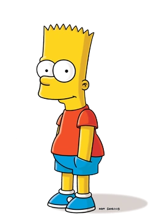
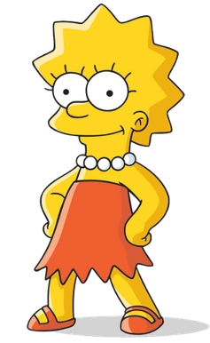

Гомер Джей Сімпсон (народився 12 травня 1956 або 1969 або 1977 або 1983) [40] є головним героєм серіалу (або серіалу) Сімпсонів . Він є чоловіком Мардж Сімпсон і батьком Барта , Лізи та Меггі Сімпсон . Гомер має надмірну вагу (кажуть, що важить ~240 фунтів), ледачий і часто не знає навколишнього світу. Хоча Гомер має багато недоліків, він продемонстрував велику турботливість, любов і навіть хоробрість до тих, хто йому небайдужий, а іноді навіть до тих, кого він не любить. Він також виконує роль головного героя фільму «Сімпсони» . Гомеру Сімпсону 39 років.
Його улюблений колір — синій, і він любить танцювати, їсти пончики, пити, обійматися, їздити на аркадних гонках, грати на фортепіано та кататися верхи. Його улюблені дитячі атракціони — «Стюарт Літтл», «Потяг Барні» та «Покатайся на механічному коні Чемпіона».
Гомер працює низьким інспектором безпеки на Спрінгфілдській атомній електростанції в секторі 7G , хоча він часто некомпетентний і недбало ставиться до своїх обов'язків. Він проводить багато часу в таверні Мо зі своїми друзями Барні Гамблем , Карлом Карлсоном , Ленні Леонардом і Мо Шислаком . Вдома його часто можна зустріти сидячим на дивані, бездумно дивлячись телевізор, перекушуючи їжею та випиваючи Duff . Гомер також є єдиним сином Авраама Сімпсона II і Мони Сімпсон. Коли його провокують, він часто душить Барта за тиск на нього. Незважаючи на те, що він взаємно ненавидить сестер своєї дружини Петті та Сельму Був’є , він зіграв чоловіка Сельми, щоб вона усиновила Лінг , і погодився бути міністром у справах гомосексуального шлюбу Петті. В результаті цього Гомер є її законним прийомним батьком. [41]
Гомер може бути просто нормальною людиною, але в його житті було багато великих досягнень і досвіду. Він отримав «Греммі», «Оскар», Пулітцерівську премію, багато разів бував у космосі та рятував Спрінгфілд.
Гомер названий на честь покійного батька Метта Гренінга Гомера Гренінга. У серії інтерв’ю в 1990 році Гронінг, як повідомляється, заявив, що він назвав персонажа на честь Гомера Сімпсона в «Дні сарани », романі Натанаеля Веста 1939 року згідно з « Планетою Сімпсонів », але жодне з цих пояснень не вважається остаточним.
Гомера можно в пізнати за такими фразами:
- ААААААА!
- Краще вони, ніж я.
- Краще вони, ніж я... Ой, чекай, це був я.

Бартолом’ю «Барт» Джоджо Сімпсон (народився 1 квітня [7] або 23 лютого [8] ) — пустотлива, непокірна, незрозуміла, руйнівна та «потенційно небезпечна» найстарша дитина родини Сімпсонів у «Сімпсонах » . Він єдиний син Гомера і Мардж Сімпсон і старший брат Лізи і Меггі . Він також отримав прізвисько «Космо» після відкриття комети в «Кометі Барта». Барт також був на обкладинці численних коміксів, таких як «Critical Hit», «Simpsons Treasure Trove #11» і «Winter Wingding». У Барта також є серія коміксів із 100 випусків під назвою The Simpson Comics Presents Bart Simpson.Метт Гронінг і його старший брат Марк Гронінг.
Барта можно в пізнати за наступними фразами:
- Я цього не робив!
- З'їж мої шорти!
- О боже!

Ліза Марі Сімпсон (народилася 9 травня) [9] — старша донька і середня дитина сім'ї Сімпсонів і одна з двох тритагоністів (разом з Мардж) серіалу Сімпсони .
У « Гомер і Ліза обмінюються перехресними словами » вона також відома як Ліза Був’є. Її назвали на честь поїзда під назвою Lil' Lisa на першу річницю її батьків. Це харизматична 8-річна дівчинка, яка перевищує стандартні досягнення рівня інтелекту дітей її віку. На загальний подив, вона також є моральним центром своєї родини. У вихованні Лізи бракує батьківської участі Гомера і Мардж, що призводить до таких хобі, як гра на саксофоні та гітарі, верхова їзда та догляд за кіньми, а також інтерес до поглибленого навчання. У школі на популярність Лізи вплинули ті, хто сприймає її як виродка, яка не встигає, через що у неї залишилося лише кілька друзів. Вона зосереджується на своїх цілях і прагне розкрити свій потенціал, і у віці восьми років вона вже є членом Mensa з IQ 159. Її відсутність участі батьків також призводить до того, що вона накидається на тих, кого вона вважає нижчими за її чи навіть над нею. Час від часу вона вкрай ревнива і зробить усе можливе, щоб повернути собі титул найрозумнішої; але тільки якщо вона вважає за потрібне. В іншому випадку вона розумна, яка зазвичай добре все обмірковує.
Лізу можно в пізнати за наступними фразами:
- Якщо я комусь потрібен, я буду в своїй кімнаті.
- БААААРТ!!
- Замовкни, Мег.